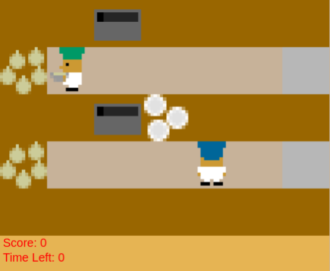

Hello! In this task, you will be co-playing a cooking game with an AI agent. Your goal will be to serve as many onion soups as possible before the end of each trial. You will be awarded 20 points for each soup served.
Each trial will have a different environment, but will look similar to this:

You will interact with objects in the environment to make onion soup recipes.
A labeled version of the environment is shown below:
You can move (up, down, left, and right) using the arrow keys, and interact with objects using the spacebar.
You can interact with objects by facing them and pressing spacebar. Here are some examples:
Note that as you and your AI partner are moving around the kitchen you cannot occupy the same location.
You will need to gather onions and put them in a pot. The soup will automatically start cooking once 3 onions are in the pot.
When a soup begins cooking, you'll notice a red number appear over the pot to denote the cook time. This number counts upward until the soup is done. Soups take 20 timesteps, or 4 seconds, to cook. Once the soup is cooked, you must grab a dish, put the soup in the dish, and then place the soup in the serving area.
Each soup is worth 20 points. After each trial, a brief survey will appear asking about your interactions with your AI teammate. Please answer these questions based on the interaction you just had. You will perform 18 total trials and each trial lasts around 80 seconds or 400 timesteps.
Before beginning a new trial remember: (1) Verify your eyes are aligned up the eye tracking bar at the bottom of the computer screen, (2) Try to maintain a consisten distance from the computer screen, and (3) During the task you can take a break by delaying the start to the next trial.